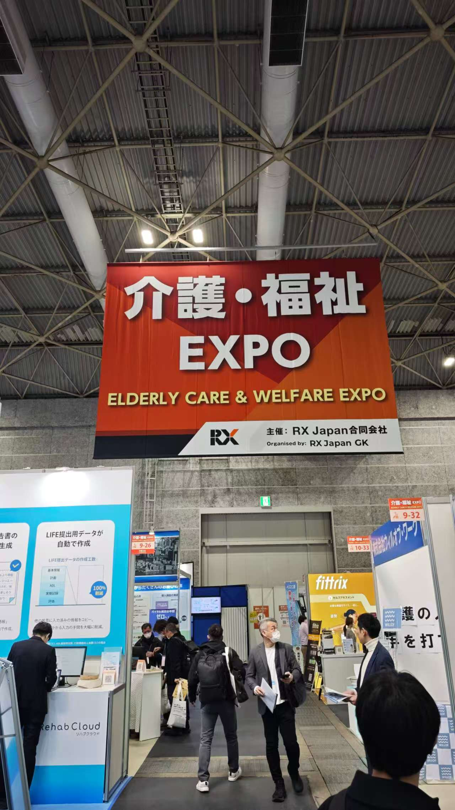

介護・福祉 EXPO
AIと先端技術が実現する、尊厳あるケアの未来
介護・福祉 EXPOでは、AI搭載の見守りセンサーや介護支援ロボットなど、テクノロジーを活用したケアの高度化が顕著なテーマとなっていました。単に業務効率を高めるだけでなく、利用者一人ひとりの尊厳と生活の質（QOL）を保ちながら、より手厚いケアを実現するという社会的価値の創出が強調されていました。人材不足が深刻化する中、テクノロジーが「人間らしいケア」の補完者として機能する方向性は、弊社が追求する福祉関連事業の理念と高い親和性を持つものでした。